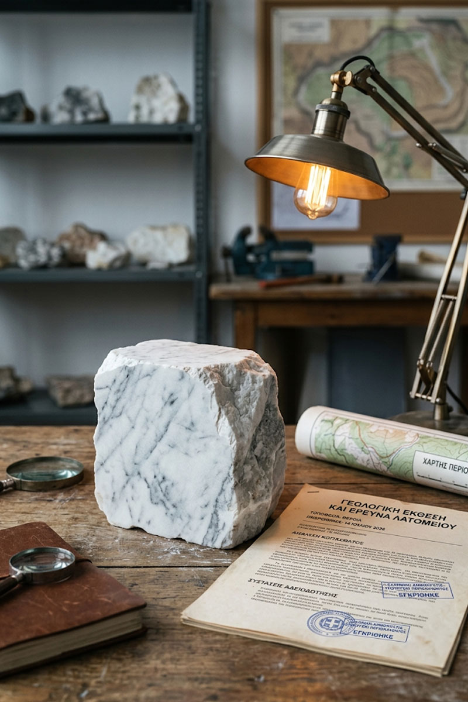

Αντικείμενο
Λατομικό Δίκαιο
Εξειδίκευση που δεν βρίσκεται εύκολα αλλού.
«Η εξειδίκευση χτίζεται στον χρόνο — και εμείς την έχουμε.»
Το λατομικό δίκαιο είναι ένα ιδιαίτερα εξειδικευμένο και σύνθετο πεδίο, όπου συναντιούνται περιβαλλοντική νομοθεσία, διοικητικό δίκαιο και εμπράγματο δίκαιο. Η γνώση της τοπικής πραγματικότητας στην Ημαθία, όπου δραστηριοποιούνται πολλές λατομικές επιχειρήσεις, μας δίνει ένα ουσιαστικό πλεονέκτημα στην αντιμετώπιση τέτοιων υποθέσεων.
Παρέχουμε πλήρη νομική κάλυψη σε λατομικές επιχειρήσεις — από την αδειοδότηση και τις παρατάσεις εκμετάλλευσης έως τα μισθωτικά δικαιώματα και την παραχώρηση δημοσίων εκτάσεων, με στόχο τη διασφάλιση της νόμιμης και απρόσκοπτης λειτουργίας της επιχείρησης.
Η μακρόχρονη παρουσία μας δίπλα σε λατομικές επιχειρήσεις της Ημαθίας μάς έχει δώσει μια σπάνια, βαθιά γνώση των ιδιαιτεροτήτων του κλάδου — από τις τοπικές διοικητικές πρακτικές έως τις συνήθεις καθυστερήσεις και τον τρόπο να τις προλαβαίνουμε.
Συνεργαζόμαστε στενά με κάθε επιχείρηση σε μακροπρόθεσμη βάση, ώστε να παρακολουθούμε προληπτικά τις προθεσμίες αδειοδότησης και ανανέωσης, αποφεύγοντας εκπλήξεις που θα μπορούσαν να διαταράξουν τη λειτουργία της.

Άδειες Εκμετάλλευσης
Υποστήριξη σε όλη τη διαδικασία αδειοδότησης και ανανέωσης λατομικών δραστηριοτήτων.
Μισθωτικά Δικαιώματα
Διαπραγμάτευση και προστασία μισθωτικών σχέσεων επί λατομικών εκτάσεων.
Τοπική Τεχνογνωσία
Βαθιά γνώση της πραγματικότητας και της νομολογίας λατομείων στην περιοχή της Ημαθίας.
Συχνές ερωτήσεις για το λατομικό δίκαιο
Ζητήματα που απασχολούν συχνά τις λατομικές επιχειρήσεις της περιοχής.
Ποια είναι τα βασικά βήματα αδειοδότησης ενός λατομείου;
Απαιτούνται, μεταξύ άλλων, έγκριση περιβαλλοντικών όρων, μελέτη εκμετάλλευσης και άδεια από την αρμόδια περιφερειακή αρχή. Η διαδικασία είναι πολυσταδιακή και απαιτεί συντονισμό νομικών και τεχνικών συμβούλων.
Πώς παρατείνεται μια υφιστάμενη άδεια εκμετάλλευσης;
Η παράταση ζητείται πριν τη λήξη της ισχύουσας άδειας, με επικαιροποίηση των απαιτούμενων μελετών και δικαιολογητικών, ανάλογα με τις εκάστοτε ισχύουσες προϋποθέσεις.
Τι ισχύει για τα μισθωτικά δικαιώματα σε δημόσια λατομική έκταση;
Η παραχώρηση δημόσιων εκτάσεων για λατομική εκμετάλλευση διέπεται από ειδικό νομικό πλαίσιο, με συγκεκριμένη διάρκεια, όρους και ανταλλάγματα προς το Δημόσιο.
Τι γίνεται σε περίπτωση διαφοράς με ιδιοκτήτη γειτονικής έκτασης;
Τέτοιες διαφορές (π.χ. για όρια, δουλείες ή ζημίες) αντιμετωπίζονται με συνδυασμό εξωδικαστικής διαπραγμάτευσης και, αν χρειαστεί, δικαστικής επίλυσης.
Ποιες κυρώσεις υπάρχουν για λειτουργία χωρίς πλήρη αδειοδότηση;
Μπορούν να επιβληθούν διοικητικά πρόστιμα και, σε σοβαρότερες περιπτώσεις, αναστολή λειτουργίας. Ο έγκαιρος νομικός έλεγχος της αδειοδότησης αποτρέπει τέτοιους κινδύνους.
Μπορείτε να αναλάβετε και τις περιβαλλοντικές πτυχές μιας υπόθεσης;
Συνεργαζόμαστε με τεχνικούς συμβούλους περιβάλλοντος όπου χρειάζεται, ώστε η νομική στρατηγική να είναι πλήρως εναρμονισμένη με τις περιβαλλοντικές απαιτήσεις.